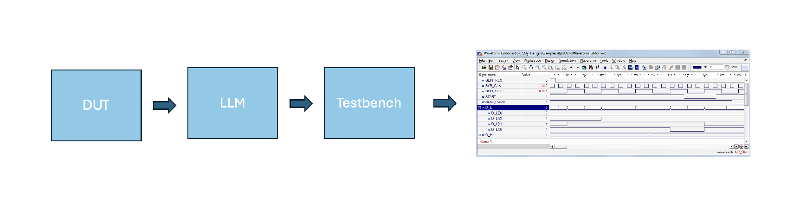

LLMs for Automatic Hardware Testbench Generation
A machine learning project exploring how large language models can automate the generation of hardware testbenches.

This project implements an automated Verilog testbench generation system using Large Language Models (LLMs). It fine-tunes open-source LLMs to generate functional testbenches for hardware designs described in Verilog HDL.
Features
- Automatic testbench generation from Verilog DUT code
- Fine-tuning pipeline using LoRA/QLoRA for efficiency
- Comprehensive evaluation metrics (compilation, simulation, coverage)
- Support for multiple datasets (AutoBench, MG-Verilog, HDLBits)
- Experiment tracking with Weights & Biases
Technical Approach
Use transformer‑based models to generate testbench code from hardware specifications and integrate with existing HDL verification frameworks.